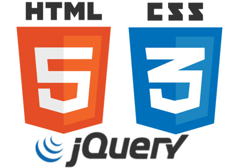

Nothing but HTML and CSS (and Some JavaScript, really JQuery)
Shapes with HTML and CSS border properties.
CSS positioning - relative, utilizing cartesian cordinates instead of using margin to position elements on the page.
"in front of" and "behind" in CSS
CSS transforms to flip and rotate elements
css animations
animations with javascript, really jQuery.
JQuery functions such as .css and .html to move information from JavaScript into CSS stylesheet and HTML markup.
one month rails - git/github
Learned about MVC, acronym for Model View Controller, is the famous software architectural pattern. Model stands for data, view for the user interface and controller for processing.
Gems- Bootstrap-sass gem. Learned about one of the popular front-end framework called Bootstrap. Bootstrap allows us to easily choose and include cool features to make our app look really awesome.
Heroku and database postgres
Database sqlite3